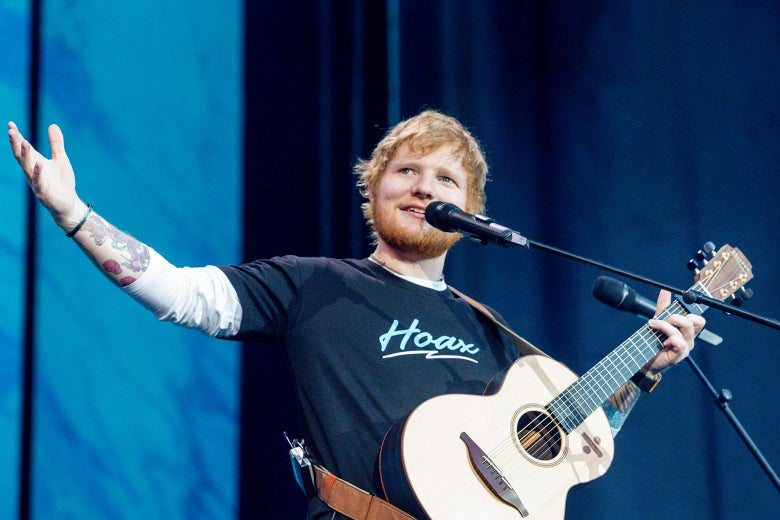
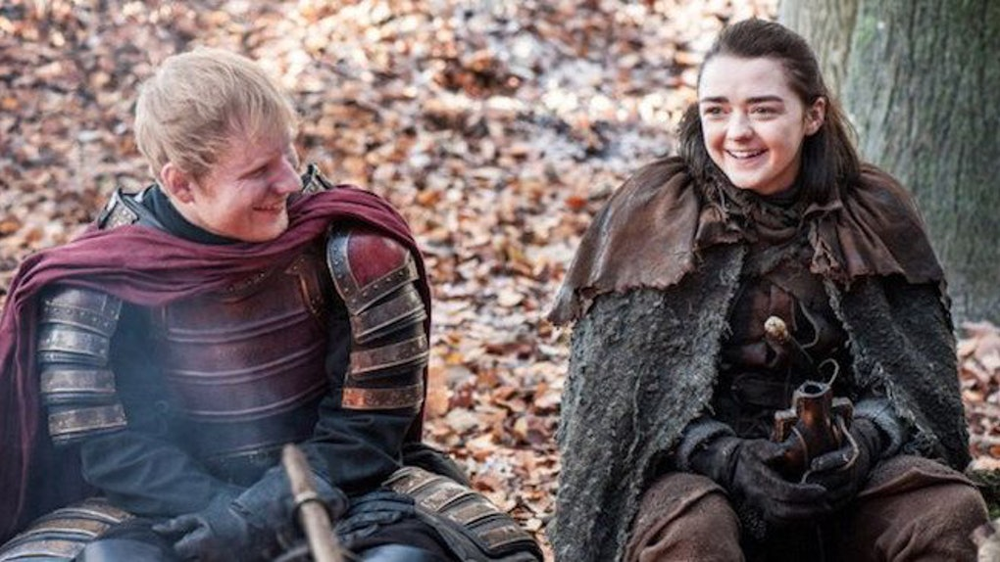
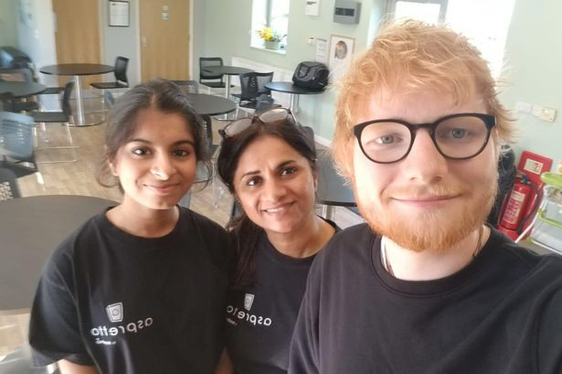

Gallery



Edward Christopher Sheeran, known by stage name - Ed Sheeran, an actor, singer, record producer and songwriter was born on 17 February, 1991 and grew up in Hallifax, West Yorkshire, England.
His early childhood home was on Birchcliffe Road in nearby Hebden Bridge. His father, John Sheeran was a curator at Cartwright Hall in Bradford while his mother, Imogen Sheeran worked in an art gallery and in the year, 1990 they founded Sheeran Lock till 2010.
Sheeran grew up in a large catholic family.
At the age of four, he sang at a local church choir, learnt how to play a guitar at the age of eleven and began writing songs while in high school.
A 2004 school report described him as a "natural performer" and was voted "most likely to be famous". He was accepted at the National Youth Theatre in London as a teenager.
In 2007, he successfully auditioned for Youth Music Theatre UK and joined frankenstein in Plymouth.
He is a patron of Youth Music Theatre UK(now renamed British Youth Music Theatre) and of Access to Music, where he studied Artist Development.
Since 2005, Sheeran has shown be an amazing artist and is best known for his folk-pop music.
Sheeran has sold over 150 million recors worldwide, making him one of the world's best-selling music artist. He is currently married to his high school sweetheart, Cherry Seaborn.